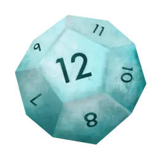

I grow under the sun. When I am not writing code, I am either drinking wine or drinking tea (with these little cups). Cheese is my bread and tracking everything in Emacs is my cheese.
P.S. d12frosted means dice with 12 sides from the Chessex™ frosted series. I used to play. Just a little bit.
Posts
- Vulpea v0.3 - July 14, 2022
- emacs-plus: PATH injection - May 12, 2022
- emacs-plus: stats - April 24, 2022
- Automatic setup of spaces with yabai - April 23, 2022
- War and World - March 3, 2022
- Path to org-roam v2 - June 11, 2021
- Task management with org-roam Vol. 7: Capture - May 21, 2021
- Towards future-safe emacs.d - April 9, 2021
- Retries with straight.el - April 8, 2021
- Task management with org-roam Vol. 6: Select a person and view related tasks - January 24, 2021
- Task management with org-roam Vol. 5: Dynamic and fast agenda - January 16, 2021
- Task management with org-roam Vol. 4: Automatic tagging - July 7, 2020
- Task management with org-roam Vol. 3: FILETAGS - June 25, 2020
- Task management with org-roam Vol. 2: Categories - June 24, 2020
- Task management with org-roam Vol. 1: Path to Roam - June 23, 2020
- Org-roam tags - June 10, 2020
…or you can find more in the archives.